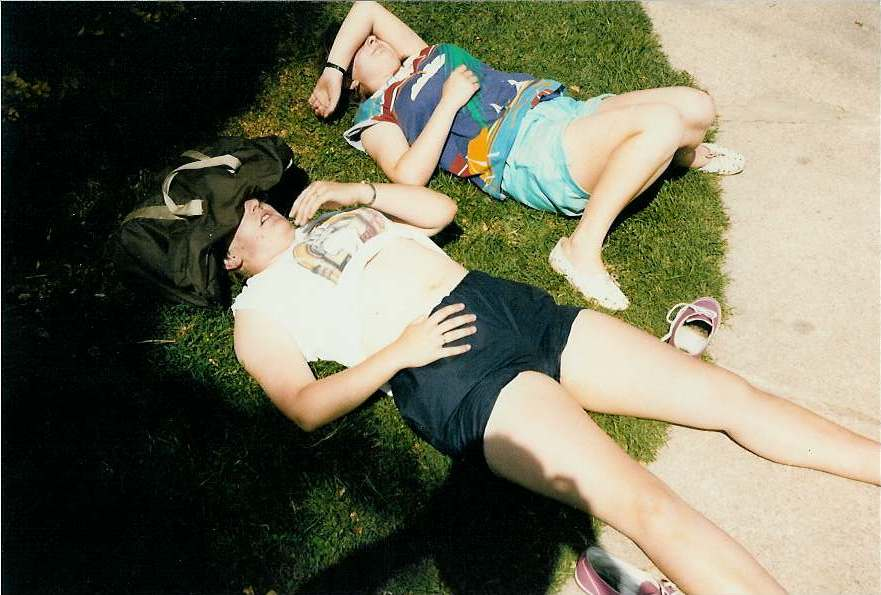

Inter Rail 1986 Day 14
Friday 5th September 1986
The alarm went off at 8.00am. Went to the loo and got Jon and Roger out of bed to their great disgust. Paid Mrs woman and were on our way by 8.30am. The food shops selling bread were shut but we were able to buy some cheese and salami. We found out that by changing trains at Dinar de la Roches we could arrive in Chamatin rather than Notre and thus cut out a Metro journey.

At the station we once again had to walk across the lines to get on the train. It was another blue and yellow locomotive. Lovely views yet again with Roger trying to get rid of remaining exposures on his camera. At Chamatin we had to queue up for a seat reservation so we left Jon do get all of ours whilst Eli and I tried to rough out a route to Andorra.
We eventually came to the conclusion it was just not worth it so we found a route to take us throught the Pyrenees from Barcelona to Toulouse and from there round to Nice and onto Italy., probably Pisa.
We sorted out our group financial matters and then Roger bought us all a coffee before boarding his train home which we waved away into the distance.
We went upstairs and found the automatic left luggage locker system was in operation for 100pts although the bags did have to pass an airport style security scanner before being locked away.
We headed off into town. Eli stopped and changed some money. We went into the Metro Station and from a route map and ordinary map superimposed on the top, found out where the Royal Palace was and how to get there. Eventually sussed that the Metro is all 1 price 50pts ie 25p.
After a 20 minute journey, with 1 change of Metro line involved, we found ourselves dangling our feet in the fountain directly opposite the Royal Palace, Palacio Real de Madrid. Had a bite to eat, then disappeared off for a beer. Sat or had a quick kip for a few hours in Jardins de Sabatini which are looked over by the Royal Palace and then felt in need of another beer.
Caught the Metro, by a different route which had us getting on 4 different types of Metro train, back to the station. Found a "recreation area" which was basically a very pleasant place to sit amongst plants etc.
Bought ourselves a hamburger with all the trimmings and chips plus a large bottle of beer and sat on top of the station eating, drinking, reading books and writing cards. Showed a couple how to work the people generated escalators.
Our train was in early. It turned out to be absolutely jammed packed. All eight places were taken in our compartment and few seats were available elsewhere. The train set off on time very, very crowded. A stupid English-speaking lass refused to budge from in front of the loo door until the guard came along.
Tried to get some kip but what with the snoring and dope smoking Moroccans it was practically impossible. Eli and I started a trend by kippiong down in the corridor. Not a brilliant nights sleep but at least I got some shut eye.
{kind=link}